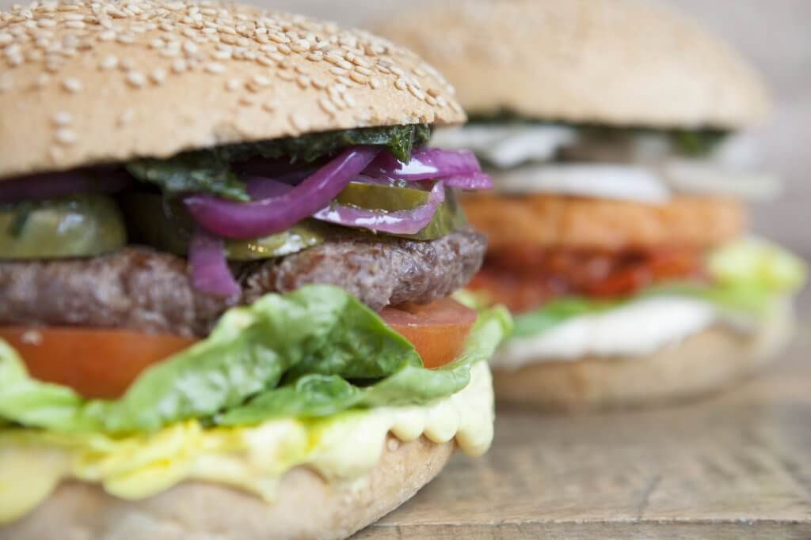
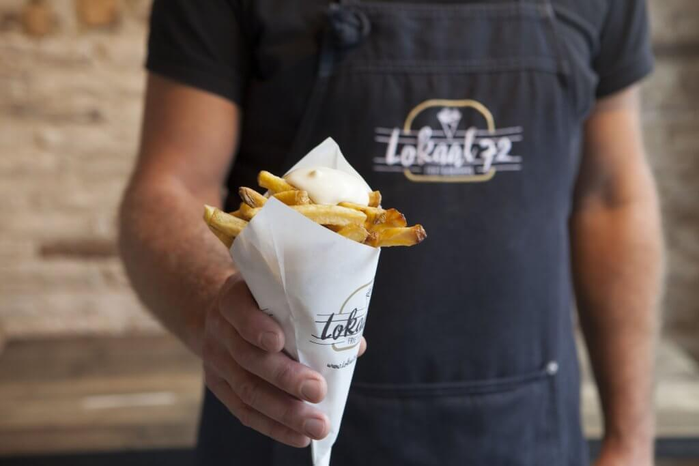
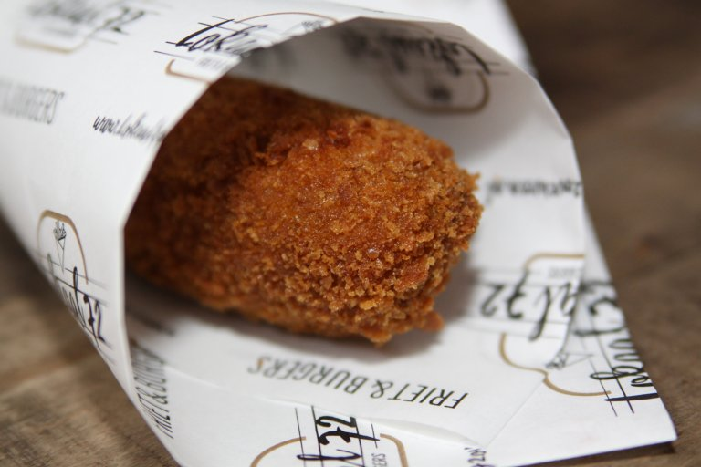
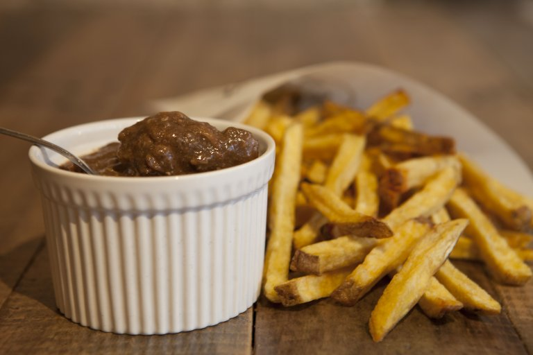
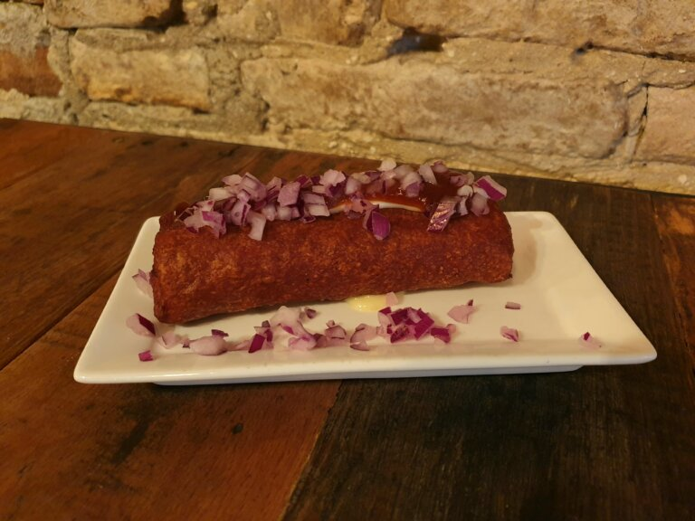
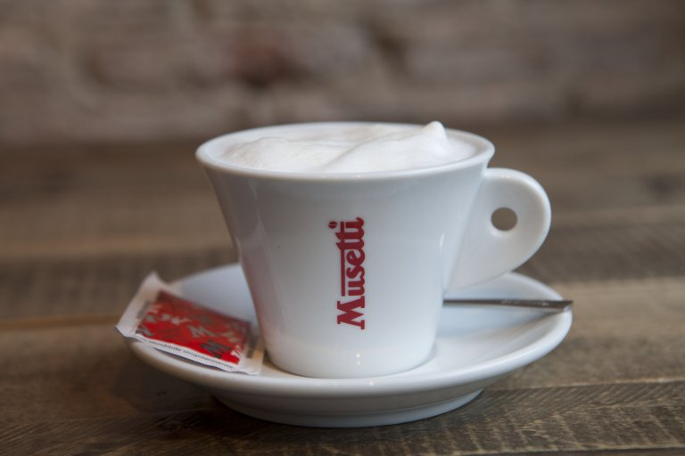
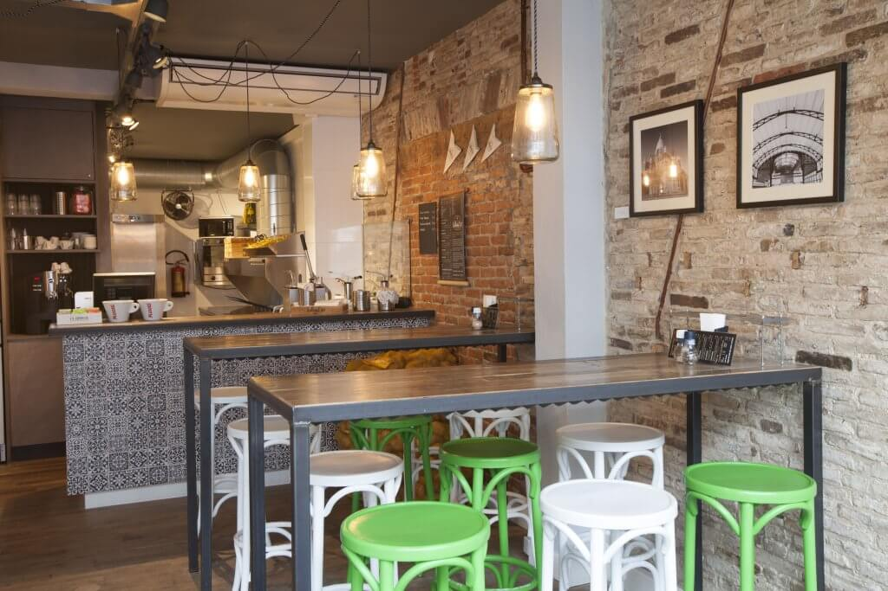
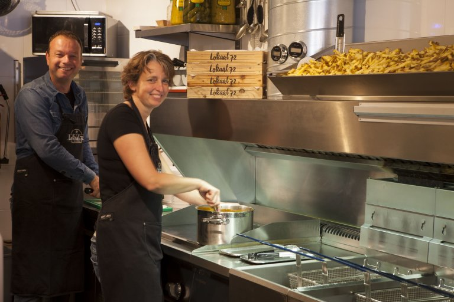
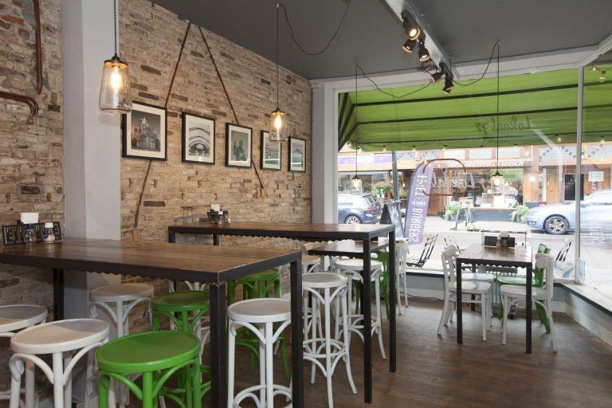

Lokaal 72 Huisgemaakte friet & burgers in Overveen
Welkom! Eet gezellig in ons lokaal aan de Bloemendaalseweg, of neem mee voor thuis of voor onderweg.
Woensdag t/m zondag 12 – 20 uurOp dinsdag zijn we tijdelijk gesloten.


Huisgemaakte frieten
Kleintje€ 2,90
Normaal€ 3,50
Middel€ 4,00
Groot€ 4,80
Familie€ 13,90
Sauzen
- Mayonaise, ketchup, curry, piccalilly, knoflook, chili0,80
- Brander mayo, mayo-sambal, piccalilly-mayo0,90
- Pindasaus, truffelmayonaise, vegan-mayo1,00
- Speciaal ketchup, speciaal curry1,30
- Oorlog1,40




Eten in het lokaal of meenemen
Witte stenen muren, groene en witte krukken en een lange tafel: in het lokaal aan de Bloemendaalseweg eet je je friet en burger gewoon ter plekke. Liever thuis of onderweg? Alles op het menu kun je ook meenemen.
De friet maken we zelf, en de burgers komen op een speltbol, ook in vega en vegan.



Waar vind je ons?
Bloemendaalseweg 2572051 GD Overveen
023 888 72 72
welkom@lokaal72overveen.nl
| Maandag | gesloten |
|---|---|
| Dinsdag | tijdelijk gesloten |
| Woensdag | 12 – 20 uur |
| Donderdag | 12 – 20 uur |
| Vrijdag | 12 – 20 uur |
| Zaterdag | 12 – 20 uur |
| Zondag | 12 – 20 uur |
Op dinsdag zijn we tijdelijk gesloten. Vanaf 2027 zijn we ook op dinsdag weer open.